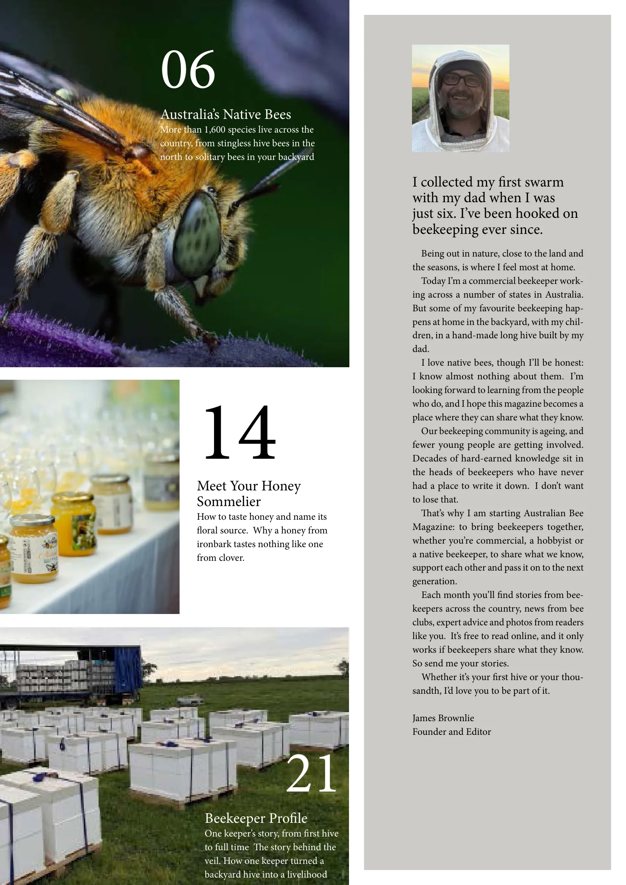

Australia’s Native Bees
More than 1,600 species live across the
country, from stingless hive bees in the
north to solitary bees in your backyard
Beekeeper Profile
One keeper’s story, from first hive
to full time The story behind the
veil. How one keeper turned a
backyard hive into a livelihood
Meet Your Honey
Sommelier
How to taste honey and name its
floral source. Why a honey from
ironbark tastes nothing like one
from clover.
I collected my first swarm
with my dad when I was
just six. I’ve been hooked on
beekeeping ever since.
Being out in nature, close to the land and
the seasons, is where I feel most at home.
Today I’m a commercial beekeeper work-
ing across a number of states in Australia.
But some of my favourite beekeeping hap-
pens at home in the backyard, with my chil-
dren, in a hand-made long hive built by my
dad.
I love native bees, though I’ll be honest:
I know almost nothing about them. I’m
looking forward to learning from the people
who do, and I hope this magazine becomes a
place where they can share what they know.
Our beekeeping community is ageing, and
fewer young people are getting involved.
Decades of hard-earned knowledge sit in
the heads of beekeepers who have never
had a place to write it down. I don’t want
to lose that.
That’s why I am starting Australian Bee
Magazine: to bring beekeepers together,
whether you’re commercial, a hobbyist or
a native beekeeper, to share what we know,
support each other and pass it on to the next
generation.
Each month you’ll find stories from bee-
keepers across the country, news from bee
clubs, expert advice and photos from readers
like you. It’s free to read online, and it only
works if beekeepers share what they know.
So send me your stories.
Whether it’s your first hive or your thou-
sandth, I’d love you to be part of it.
James Brownlie
Founder and Editor